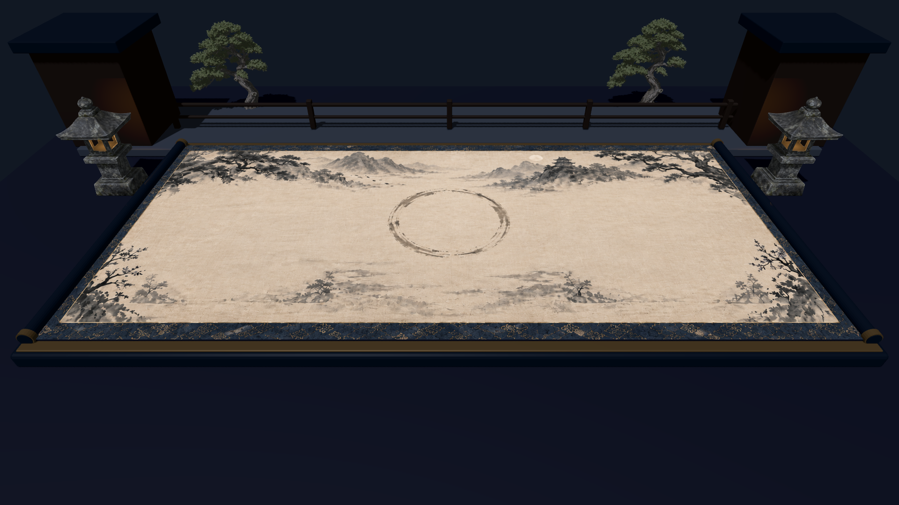
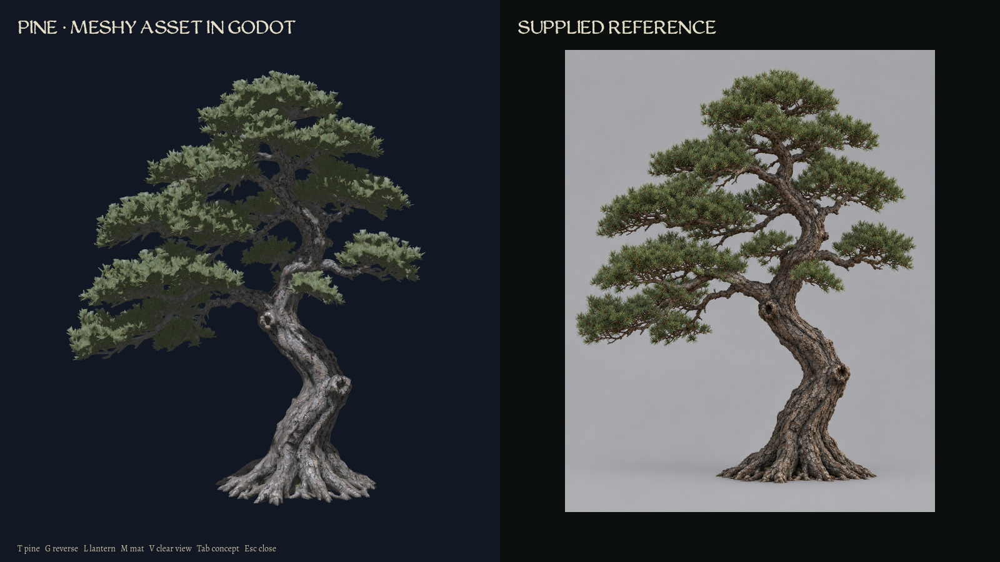
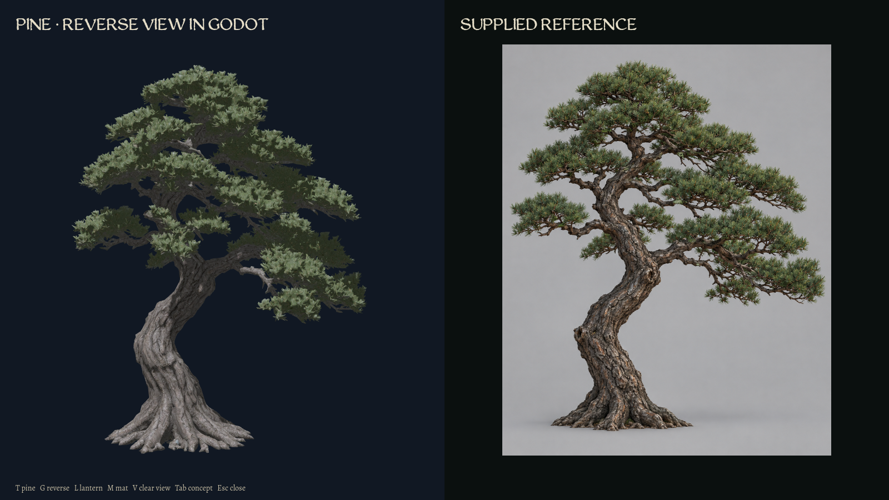
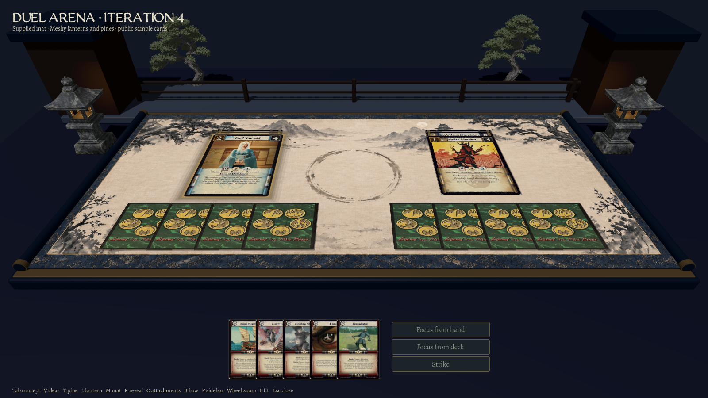
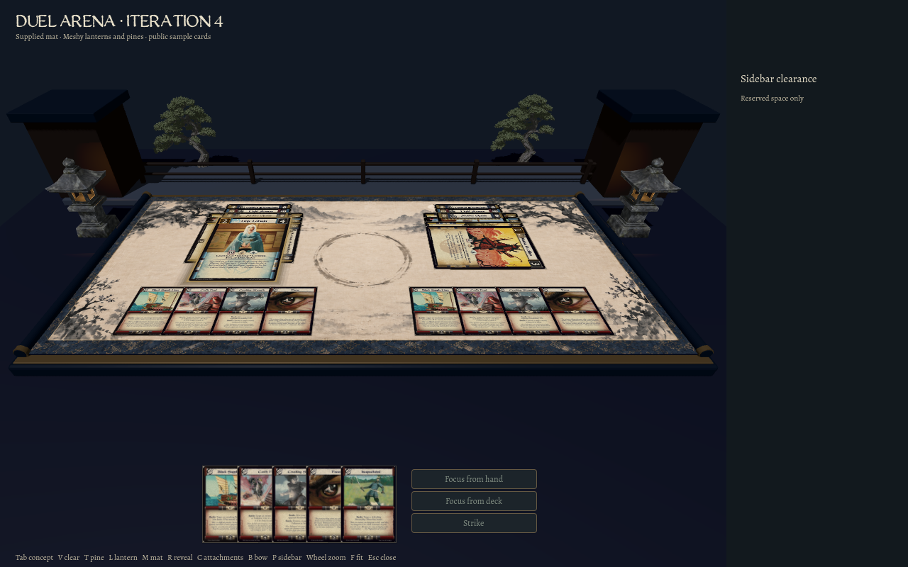
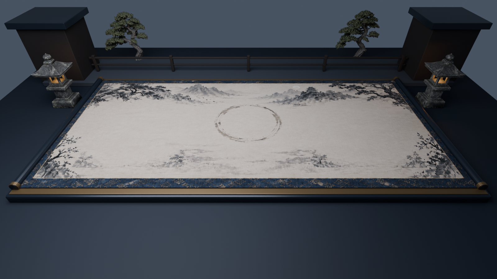

Japanese pine from approved external ChatGPT images through Meshy and Blender. Two generation attempts consumed 60 credits. This is an asset and layout review; final pine acceptance, architecture, atmosphere and live duel integration remain open.





